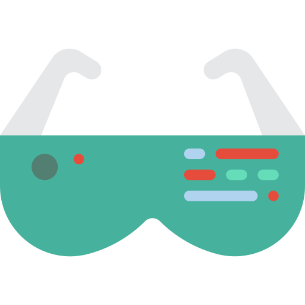
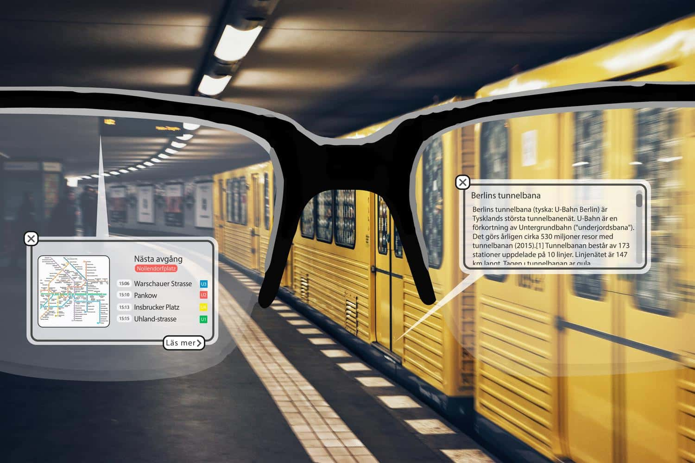

Please make the person WEAR these glasses (click)

Tänk om jag kunde läsa om när denna finfina tunnelbana byggdes. Och hur dom egentligen gjorde allt, utan att behöva google hela tiden!

WikiAR - läs och upptäck historien om allt och runtomkring dig
Be smart
WEAR
Wonderful
Easy
Augmented
Reality